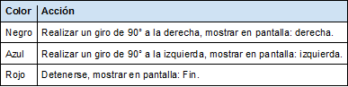
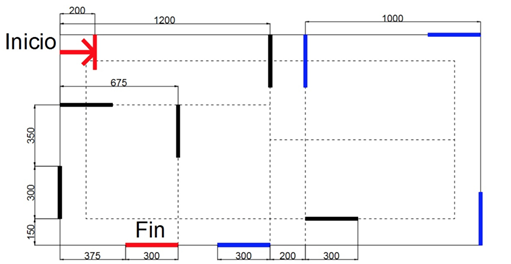

Lego
Laberinto de colores
nuestro trabajo final de Lego consistio en hacer que nuestro robot cruzara un laberinto utilizando los conocimientos de los ejercicios en clases
Caracteristicas
- Al llegar a cada cinta y realizar el giro o deternerse (10 cintas)
- Debera mostrar un texto en pantalla dependiendop del color de la cinta
- El robot tendrá que avanzar en línea recta, al encontrar una cinta de color realizará lo siguiente:  
En mi opinion personal estuvo muy interesante el proyecto de Lego mas sin embargo mi equipo no logro completarlo